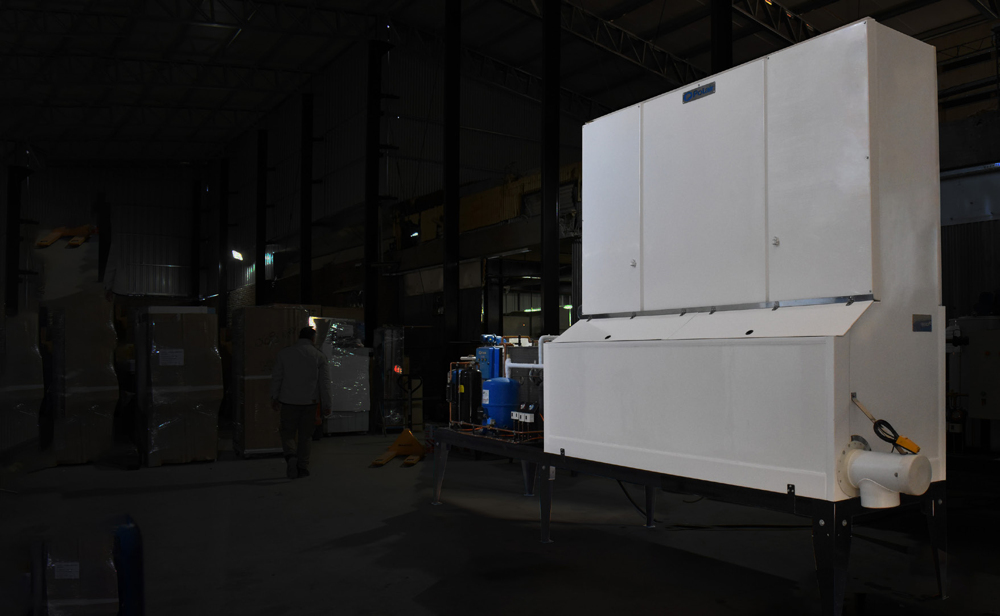

Productora automática Roll Ice I-1.500. Industria argentina, con más de 600 fábricas de hielo instaladas y funcionando en todo el país.
Armamos un simulador que proyecta el flujo de fondos mes a mes. Elegís el equipo, cargás tus costos reales y ves cuánto facturás, cuánto te queda y en qué mes recuperás la inversión. Es la misma herramienta con la que cotizamos nosotros.
Seguí el ciclo completo: cada 30 minutos el hielo cae al depósito refrigerado, se acumula y queda listo para embolsar. Podés pausar la animación o recorrer manualmente las ocho horas de producción.
El equipo se adapta a la altura de tu galpón y a dónde te convenga tirar el calor del condensador. Elegí una y mirá cómo cambian las medidas.
Se transporta sin las patas montadas, con 2,86 m de alto, para poder viajar en un camión de chasis bajo. Al llegar se posiciona en el lugar definitivo y se montan las patas.
Los números generales del equipo y sus cuatro sistemas independientes: frío, llenado, corte y agua. Todos los componentes son de marcas reconocidas y se consiguen en el país, así que el mantenimiento nunca te deja parado esperando un repuesto importado.
Precios expresados en dólares estadounidenses, convertidos al tipo de cambio oficial del BNA del día del pago. Entrega inmediata para unidades en stock; consultá por entrega programada.
Los 1.500 kg/día están calculados a 25 °C de temperatura ambiente y 20 °C de temperatura de agua. Con agua o ambiente más cálidos la producción baja; con condiciones más frías, sube.
Lista de precios al 03/03/2026. Los valores pueden actualizarse sin previo aviso — pedinos la cotización formal para congelar el precio.
Respuestas rápidas antes de avanzar con la cotización. Abrí solamente la que necesitás.
Es un rubro con buenos márgenes y recuperación rápida de la inversión. Puede manejarse con una persona o en familia, usa agua y electricidad como insumos, requiere poco espacio y permite horarios flexibles.
El mercado pasó de grandes fábricas regionales a unidades pequeñas y distribuidas localmente. Las productoras automáticas permiten atender ciudades y zonas cercanas con bajo costo operativo y hielo de calidad premium.
Hay que conocer la población y zona de influencia, el turismo y los eventos, consultar a consumidores y comercios, relevar precios y detectar puntos de venta todavía no atendidos.
Por su tecnología de tubos independientes, contenedor refrigerado y embolsado integrado. Produce hielo cristalino y parejo sin asistencia permanente, con desarrollo y fabricación nacional.
La productora, un salón o galpón adecuado, cámara frigorífica o heladeras hieleras, filtrado si el agua es dura y un vehículo preparado para distribuir según la zona a cubrir.
Depende de si será una actividad complementaria o un emprendimiento de tiempo completo, de la población, del clima, el turismo y la competencia. Como referencia del boletín, se estiman unos 500 kg/día cada 10.000 habitantes.
Se recomiendan unos 50 m² para productora y cámara, o cerca de 100 m² si se suma vehículo, depósito y ampliaciones. El ingreso mínimo es de 2,60 m, el techo de 3,60 m, con ventilación, energía trifásica y agua potable.
El agua de red proveniente de río suele ser ideal. El agua de perforación puede contener calcio, sales y minerales; en esos casos la ósmosis inversa ayuda a obtener hielo cristalino y mantener limpia la máquina.
La compacta llega funcionando y requiere buena ventilación. Si el galpón es pequeño, ventila mal o el ruido resulta molesto, conviene instalar el equipo de refrigeración en el exterior, con montaje y puesta en marcha oficial.
El hielo es producto y servicio: importan la calidad, la presentación, la distribución, la entrega en condiciones ideales y el cumplimiento de días y horarios. El precio debe acompañar al mercado.
Conviene generar confianza desde la temporada baja. Adaptar el lugar, obtener trifásica, preparar agua, cámara y vehículo puede llevar al menos tres meses; el boletín aconseja prever también la reserva anticipada de la productora.
La máquina produce y conserva el hielo automáticamente. El embolsado demanda unos 15 minutos, tres o cuatro veces por día; luego las bolsas permanecen al menos un día en la cámara antes de distribuirse.
La temperatura de la zona define la elección. Para climas tropicales donde es habitual superar los 35 °C en verano, el boletín recomienda evaluar condensación con torre evaporativa.
La unidad compacta se posiciona con autoelevador, se colocan las patas y se conectan electricidad y agua. Si el equipo va separado, la instalación y puesta en marcha debe hacerla personal especializado definido por Polair.
La garantía es de un año para fallas de fabricación, con las excepciones indicadas para componentes eléctricos o electrónicos. El mantenimiento básico puede hacerlo el operador y Polair brinda asistencia para reparaciones locales o servicio desde fábrica.
La cámara termina de enfriar el hielo y conserva stock para los picos de demanda. Para una I-1.500, el boletín propone como ejemplo una cámara de 2,4 x 2,4 x 2,4 m, con capacidad aproximada de 5.600 kg.
Hasta 1.500 kg diarios puede utilizarse un utilitario pequeño de unos 2 m³ con aislación térmica adecuada, con o sin refrigeración según la distancia. El hielo a -8 °C puede conservar autonomía limitada sin equipo de frío.
Se usan bolsas comerciales y familiares, con tendencia a presentaciones más pequeñas. Las unidades chicas logran mayor valor por kilo. El cierre de mayor aceptación es el precinto de alambre.
Debe viajar en condiciones especiales: camión de chasis bajo, vehículo liviano con suspensión que reduzca golpes y traslado exclusivo, conducido por alguien consciente del tipo de carga.
Contanos dónde querés instalarla y con qué contás. Te armamos la cotización formal y te acompañamos hasta que la fábrica esté produciendo.
Refrigeración Polair s.r.l.
Bolivia 852
(2000) Rosario, Santa Fe
Argentina
instaladas y funcionando en todo el país desde hace más de 30 años.